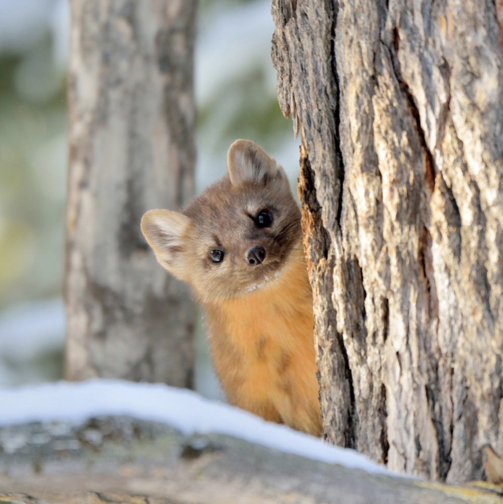

CascadiaTools: validated ecological analysis for AI coding agents
Describe your data and your question in your own words. An AI agent runs the analysis with statistical code that was written once, tested against known answers and checked by a second, independent agent.
Like an R package you trust, but for an AI agent
You probably trust R packages you did not write, such as unmarked
or secr. Other people wrote them, checked them and used them for years.
AI agents such as Claude can now write analysis code for you, but they write new code
every time, and nobody has checked it. CascadiaTools is a library of
29 vetted analysis modules, each tested on simulated data with known answers.
The agent calls these modules instead of writing new, unchecked code. You still get
to ask your question in your own words.
Five steps, every time
-
You describe your data and your question
The way you would explain it to a colleague. For example: “I have woodpecker call surveys from 120 stands, up to 4 visits each. Does forest cover affect whether woodpeckers occupy a stand?”
-
The agent checks your files and writes a plan
It reads your files, describes them back to you (sites, visits, missing values, odd entries) and writes a short analysis plan: what will be estimated, with which model. It never changes your original files.
-
Planted truth: it tests the method on data like yours
It simulates many data sets with your design (your number of sites, visits, traps or animals) where the true answer is known. It fits each one and checks that the method gets the true values back. If the method can't recover the truth at your design, you are told, with numbers, before any result is reported.
-
It fits your data and checks the fit
It checks that the model converged and that it fits the data (goodness-of-fit tests or posterior predictive checks).
-
You get a report
Plain-language results with intervals, publication-ready figures, and a methods paragraph you can adapt. The analysis is marked DONE only when every check passes. If something can't be trusted, it is marked OPEN, with the reason. An honest OPEN is better than a false DONE.
29 analysis modules
Each module has its own page: when to use it, the data it needs, a worked example and how well it recovers known answers. Not sure which one you need? Use the finder.
Regression and causal inference
Occupancy
Abundance
Spatial capture-recapture
Demography and population dynamics
Distribution and community
Movement
Conservation genetics
Fisheries
Built by one agent, checked by another
Each of the 29 modules was built by one AI agent and then checked by a second, independent agent. The second agent wrote its own simulator, checked the equations against the published papers, and tried to break the module.
Passing means the method recovered known true values from simulated data, at a stated design, within fixed limits on bias and interval coverage. It is not a proof that the method works everywhere. Where a module stops working (too few sites, too few animals, low detection), the limit is written down as a number. In the 29 worked examples, 20 are DONE and 9 are OPEN at the example's own design, each with its reason.
What stays on your computer
The statistics run on your own computer. The AI model does not: anything the agent reads or prints is sent to the model provider. For sensitive data, such as locations of rare species, there is a private mode, and you can always run the toolkit without AI.
How many sites do I need?
The same simulation machinery answers study-design questions: how many sites, traps, visits, animals or loci you need to estimate an effect well.
Citing CascadiaTools
If you use CascadiaTools in a paper or report, please cite it, and also the R packages that each analysis report lists.
Levi, T. (2026). CascadiaTools: validated analysis modules and protocols for AI-assisted ecological analysis (version 0.2.0). Cascadia Wildlife Lab, Oregon State University. https://github.com/taaltree/CascadiaTools
CascadiaTools was created by Taal Levi at the Cascadia Wildlife Lab, Oregon State University. Code: MIT licence. Documentation, protocols and examples: CC BY 4.0. Source code: github.com/taaltree/CascadiaTools.